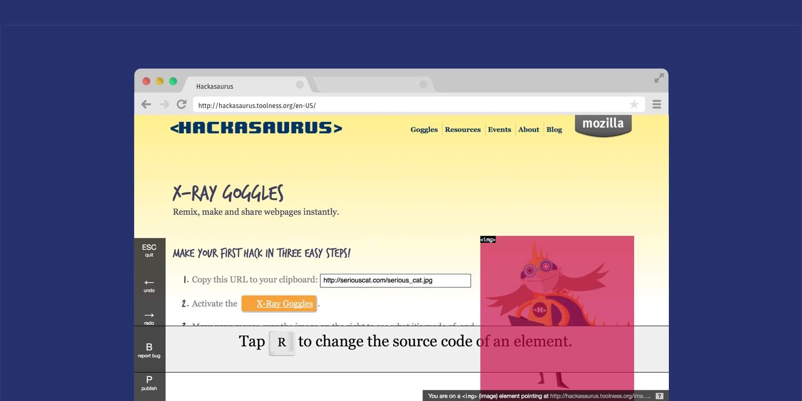
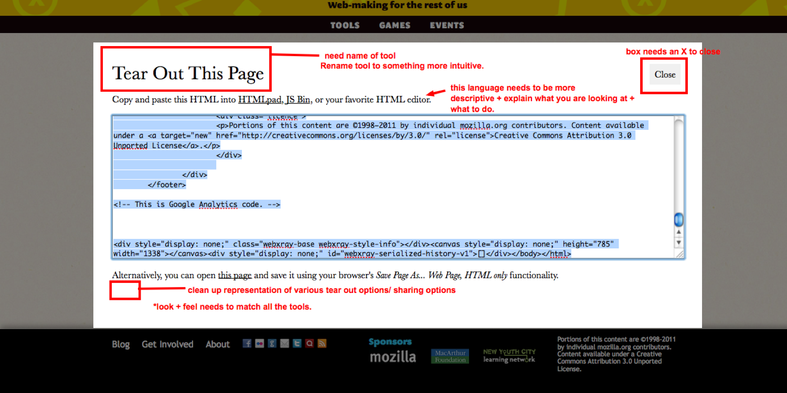
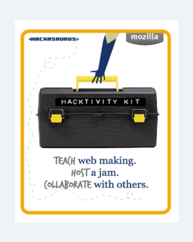
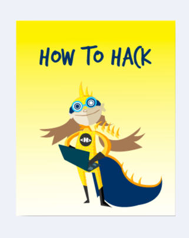
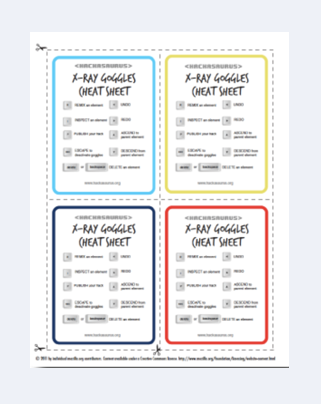

Hackasaurus - code tinkering to mastery
Hypothesis
Giving teens the ability to edit the sites they use every day, alongside training for educators to guide project-based learning, will help them learn HTML and CSS because they’re working in a familiar environment instead of an isolated coding sandbox.
intervention action logic
Prototyping and Testing Strategy
- Design: Provide a bookmarklet for teens to remix familiar websites and train educators to support them.
- Engage: Run hack-jams with after-school programs at the New York and Chicago Public Libraries.
- Test & Iterate: Test the learning approach and refine the tools.
Solution
The X-Ray Goggles browser extension makes it easy to see and remix the code behind your favorite web pages. The goal: give users a fun, hands-on way to learn HTML and CSS.
https://www.youtube.com/watch?v=AOSAx7karNg
This is a useful overview from Doug Belshaw on how the tool works
https://www.youtube.com/watch?v=Gx63KznqGDc
This is a great educator-focused explainer by Common Sense Media.
Lo-Fi Design and Participartory Design
This project was conceived of, designed, and, implemented with Atul Varma. at Mozilla. We worked very closely with radical librarians in New York and Chicago initially, and this morphed into a huge international collaboration with educators and youth from Newark to Nairobi. We worked iteratively, testing and tweaking the tools and updating (and localizing) the curriculum.

The bookmarklet in action remixing an image.

This is an early mockup of the editor. Lots of markup!

Teach the Teachers Guide.
An I.T. checklist for hosting events.

How to Hack - a user’s guide.

The goggles cheat sheet.